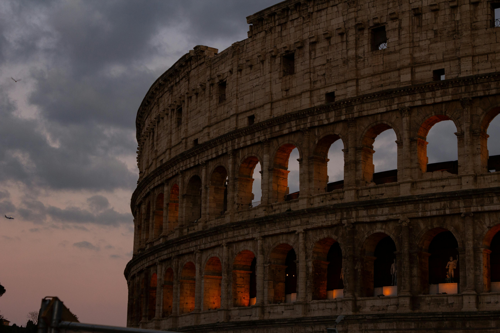

Fondata secondo la leggenda da Romolo nel 753 a.C., Roma passò da umile villaggio sul Tevere a caput mundi dell’Impero Romano. Le sue vie consolari irradiavano verso ogni provincia, mentre fori, templi e anfiteatri trasformavano il paesaggio collinare in un palcoscenico monumentale che ancora riecheggia di orazioni e trionfi.
Dopo la caduta imperiale del 476 d.C., la città conobbe secoli turbolenti, rinascendo come fulcro della cristianità con la costruzione di basiliche paleocristiane e palazzi papali. Dal Rinascimento al Barocco, maestri come Michelangelo e Bernini scolpirono piazze, cupole e fontane che scintillano alla luce dorata del tramonto. Oggi Roma è Patrimonio UNESCO e incanta viaggiatori con strati di storia sovrapposti come i marmi del Foro.
Ogni strato archeologico è un capitolo: dalle domus sotterranee di San Clemente ai murali di Tor Marancia, la città rivela continuamente nuovi volti. Sette colli, mille storie: Roma vive nell’equilibrio tra mito e quotidianità, gelato alla mano e passi che risuonano sul basolato antico.
Impero, Papato e Modernità

Nei secoli dell’Impero, il Colosseo ospitò giochi gladiatori, gli acquedotti portarono acqua alle terme e il Foro Romano divenne cuore politico dell’orbe. Con il dominio papale, Roma si vestì di logge affrescate, scalinate scenografiche e obelischi egizi a segnare assi urbanistici.
Dopo l’Unità d’Italia (1870) la città fu eletta capitale e si aprì ai viali alberati del Rione Prati, ai ministeri neoclassici e alle vivaci caffetterie di Via Veneto. Oggi grattacieli dell’EUR si affacciano su rovine millenarie; musei contemporanei come il MAXXI dialogano con catacombe e catene di chiese barocche, offrendo al viaggiatore un ininterrotto ponte fra passato e futuro.
Start-up, street-art e cucina d’autore convivono con colonne spezzate e cortili rinascimentali: la Città Eterna continua a dettare tendenze senza rinunciare al proprio mito.